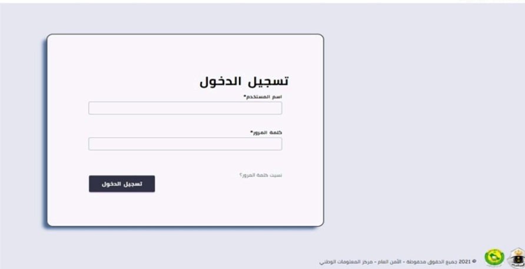
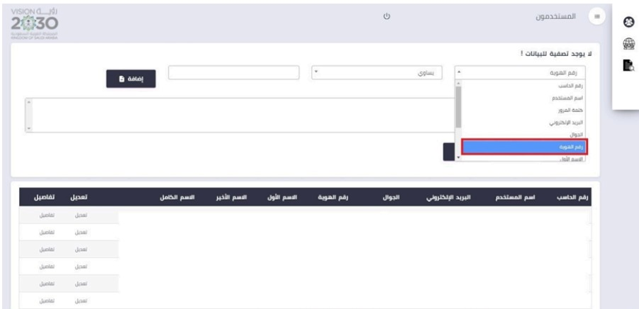
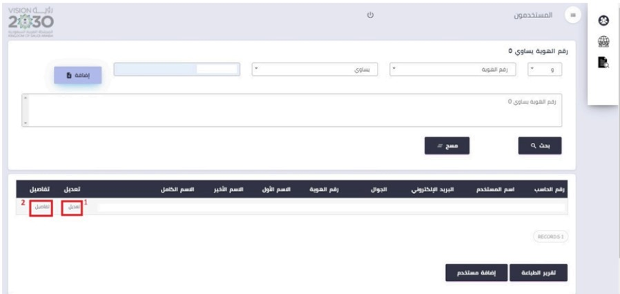
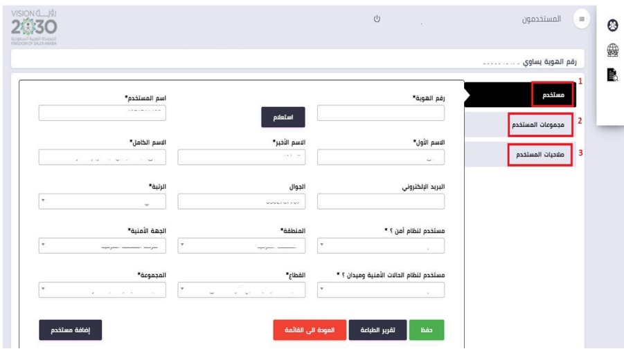
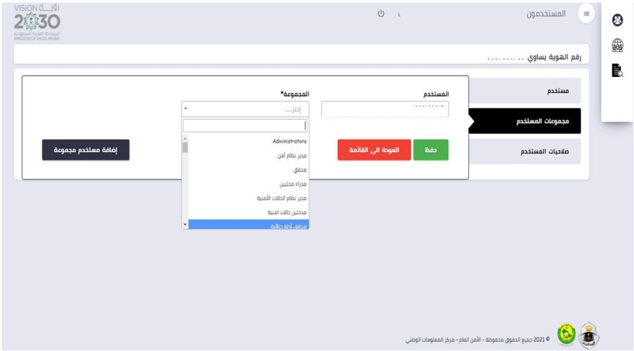
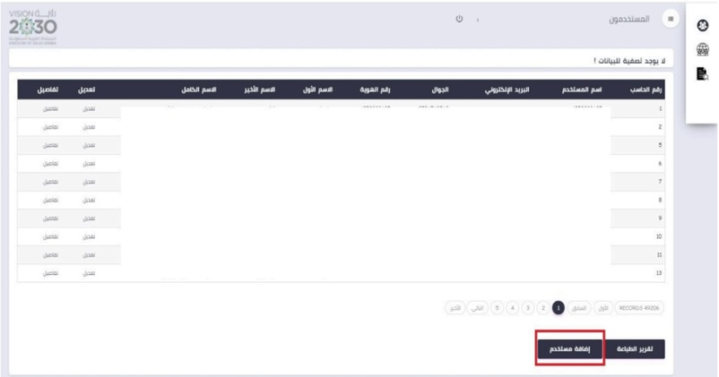
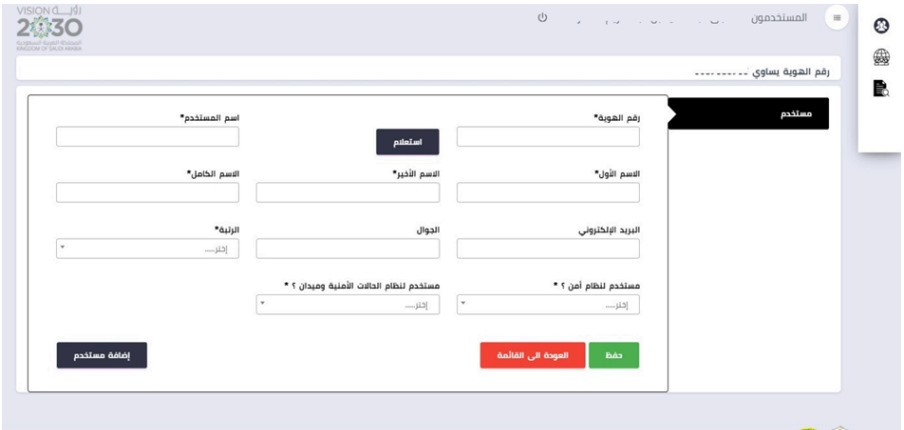
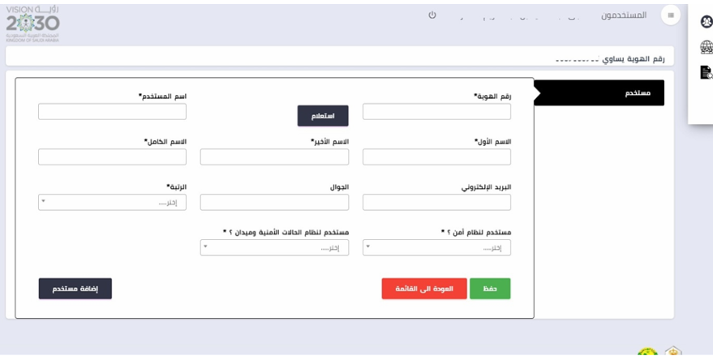
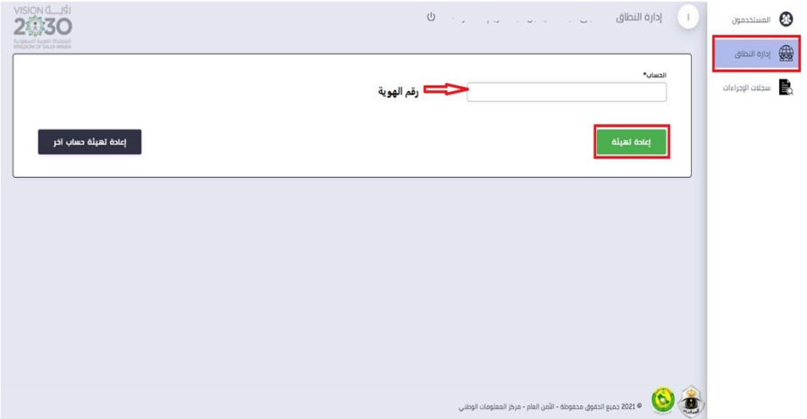

إضافة مستخدم
•واجهة الموقع من خلالها يتم إدخال اسم المستخدم وكلمة المرور، وذلك بعد صرف رقم مشغل على نظام أمن .
•من خلال الضغط على تبويب المستخدمون يتم اختيار المستخدمين ومعرفة بياناتهم.

•من خلال القائمة المنسدله تظهرالخيارات الموضحه أدناه، وفي حال كان المستخدم لدية رقم مشغل مسبقاً وتم اختيار رقم الهوية ثم إضافة ستظهر بياناته كامله
يمكن عمل تعديل لبيانات المستخدم من خلال ايقونة تعديل. او الضغط على تفاصيل لإظهار بيانات المستخدم الرئيسية
•من خلال الضغط على ايقونة تعديل في الصوره السابقة تظهر لنا الشاشة في الصوره أدناه حيث تنقسم الى : تبويب مستخدم يمكن من خلالها عمل الإتي : •تعديل رقم الجوال •تعديل الرتبة
تعديل المنطقه \الجهه الأمنيه
تعديل القطاع \المجموعه
التعديلات التي تم ادراجها
يتم بعد ذالك الحفظ
: تبويب مجموعات المستخدم يظهر الأتي
المستخدم : هنا تظهر هوية المستخدم •المجموعة : حيث يمكن من خلالها إدراج الصالحيات المختلفة حسب تخصص وطبيعة عمل المستخدم ثم الضغط على زر حفظ. •إضافة مستخدم مجموعة : من خلالها يتم إضافة عدد من الصالحيات وذلك من القائمة السابقة (المجموعه) .
•في حال كان المستخدم ليس لديه رقم مشغل يمكن إضافته كمستخدم جديد من خلال ايقونة إضافة مستخدم .
بعد الإضافة تظهر لنا الشاشة التالية يمكن من خلالها تعبئة البيانات اللازمة وعند الإنتهاء يتم الضغط على ايقونة حفظ.
•من خلال هذا التبويب يمكن عمل تهيئة لرقم المستخدم بوضع رقم الهويه في خانة الحساب ثم الضغط على زر إعادة تهيئة. •يمكن عمل تهيئة لمستخدم أخرمن خلال زر إعادة تهيئة حساب آخر
